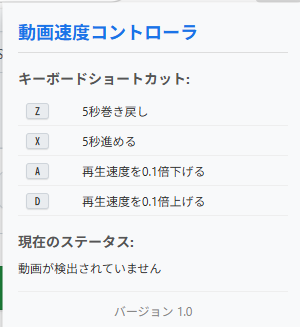
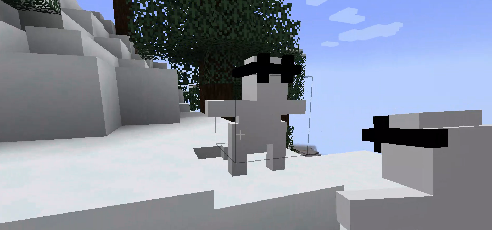

Bio
明石高専に出没する野生の高専生。
捕獲には、あの緑の爪痕の魔剤が要るらしい。
プログラミング、web開発、ハードウェア制御からビジネスまで、興味本位で活動を行う。がむしゃらにコードを書き、ハッカソンやコンテスト、個人開発で実装力を鍛える日々。
Chronology
Origin & Turning Point
兵庫県高砂市出身。当時遊んでいたゲームを作るゲーム開発者への憧れからエンジニアを志す。明石高専入学後、友人の誘いで参加した初のハッカソン（LINE&Yahoo OpenHackU 2024 Fukuoka）にて、技術不足を痛感しプログラミングの本格的な学習を開始。
Exploration of Tech Stack
Python独学（スクレイピング・データ分析）、HTML/CSS/JSによるWeb開発の基礎、ロボット工学研究部（高専ロボコン）でC++とマイコンを用いたハードウェア開発を学習。
Team Development, Leadership & Contests
- LINE Open Hack U 2024 Kanazawa: フロントエンド担当。DSのすれ違い通信風Webアプリ開発。（Flask, JS）
- 関西ビギナーズハッカソン vol.5: 初のチーフディベロッパー。AIによる未来予測・ベットアプリ開発。
- OpenHackU 2025 Kanazawa: チーフディベロッパー兼PM。位置情報・天候連動型占いサービス「そらログ」開発。インフラ・バックエンド及び未経験メンバーへの技術指導を担当。
- 全国高専プロコン2025(プログラミングコンテスト): 自由部門への挑戦へ挑戦し、本戦出場
- DCON / ヒーローズリーグ / SEIKA AWARD: 各種コンテスト・アワードへのプロダクト応募・挑戦。
Skills & Arsenal
Web Development
フロントエンドからバックエンド、インフラ構築までの一連の開発。
Software & AI
AI連携、デスクトップ/モバイルアプリ、スクレイピング。
Hardware & Others
回路制御、ゲームエンジン、開発環境ツール。
Works

V-Mate (formerly AI Wife test)
[My Core Project] 感情ベースで対話を行う3Dキャラクターインタラクションシステム。自然な会話、表情の変化、そしてユーザーとの絆を追求。3D AI Companion (CharaTalk) を再構築。

そらログ (Soralog)
位置情報や天候、遅延情報などのコンテキストに基づいたジンクス・占いWebサービス。PM兼チーフディベロッパーとして開発。

3D AI Companion (CharaTalk)
感情ベースで対話を行う3Dキャラクターインタラクションシステム。自然な会話ができるように追及。まだ技術力が浅く、キャラクターをウェブ上で動かすことができなかった。

Discord VoiceVOX Chatbot
VoiceVOXを活用し、Discord上で自然なメッセージ送信と音声対話を実現するAIチャットボットシステム。わざと送信に間をあけたりすることで実際に友達と話をしているように演出。

YouTube Speed Controller
動画の再生速度や字幕を細かく調整し、コンテンツの消費生活を加速させるためのGoogle Chrome拡張機能。実際にyoutubeなどを見るときにお世話になってますw

Memory Architect
記憶をベースにしたweb機能だけで実装した都市運営シミュレーションゲーム。

Stardust Ruins
静寂な世界観をベースにした3D探索アドベンチャーゲーム。公開Assetsを使って楽に広大なマップやキャラクターを実装できた。

Orpheus in Minecraft
とあるコミュニティのマスコットキャラクター「オルフェウス」をゲーム内に実装するMinecraft用Mod。
Contact
開発の依頼、ハッカソンやコンテストへの誘い、その他のお問い合わせはお気軽にどうぞ。
taku810616@gmail.com